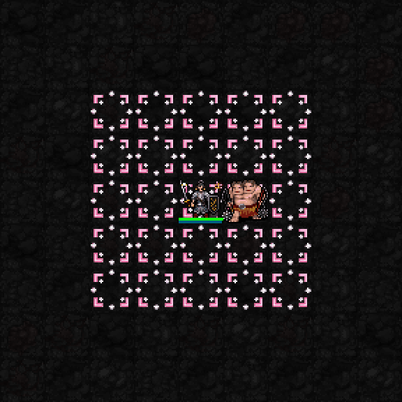
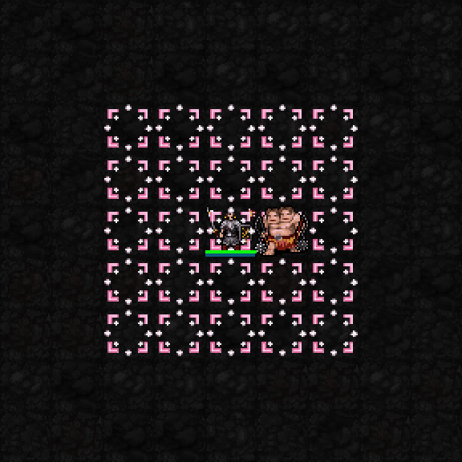
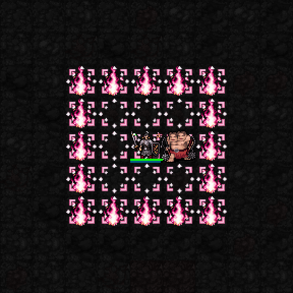
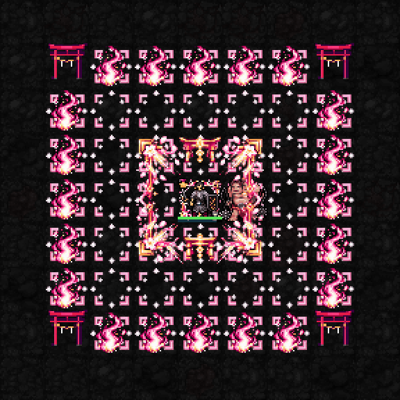
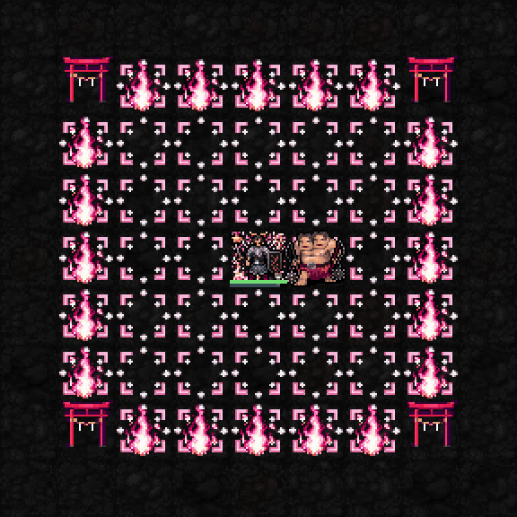

실제 SDL 검사장 화면. 새 토리이 도트와 기존 승인 도트를 사용하며 처음 1성부터 회복·상태 완화·신앙 보상·바닥 표시가 5×5로 적용됩니다. 고정 장비와 높은 자원의 검사장으로, 일반 던전 플레이 영상은 아닙니다.


MP3 / 1턴 / 신앙 소모 없음. 최소 기도술 없음. 지속20+0.5×기도술 턴. 설치 완료2턴 뒤부터2턴마다1+기도술/12 HP 회복. 새 독·혼란·감속·공포의 지속시간25% 감소. 위치 고정.

범위를 넓히는 대신 테두리에 분홍·금색 불꽃이 붙습니다. 불꽃: MP3 / 신앙3 / 1턴, 지속5+0.2×기도술 턴. 피해1d(5+floor(기도술/4)), 화염저항 적용. 결계: 자신은 안, 적은 밖일 때 원거리 피해10+floor(기도술/3)% 감소. 최소 기도술 없음. 신앙75 해금.

중앙의 결계가 퍼지고 7×7의 네 모서리에 금줄·흰 종이 장식이 달린 기존보다 약33% 커진 붉은 토리이가 세워집니다. 모서리 바닥 표식을 지우고 토리이를 조금 위로 띄워 금줄이 선명하게 보입니다. 중앙 금빛 표식은 유지합니다. 토리이는 시각 효과이며 통행이나 공격을 막지 않습니다. 활성 불꽃은 새 바깥 테두리로 이동합니다. MP6 / 신앙10 / 1턴, 지속6+0.2×기도술 턴. 피해15+floor(기도술/3)% 감소, 새 상태이상 지속시간50% 감소, 대상 상태 하나 즉시 정화. 종료 후10턴 재사용 제한. 최소 기도술 없음. 신앙120 해금.
새 2성 ‘봉납의 벚꽃’ 처치 회복·초과 회복 보호막은 수치 제안 단계이며 이번 변경에 포함되지 않았습니다.

불꽃이 먼저 꺼져도 토리이는 신역 종료까지 유지되며, 5성이 끝나면 사라집니다.